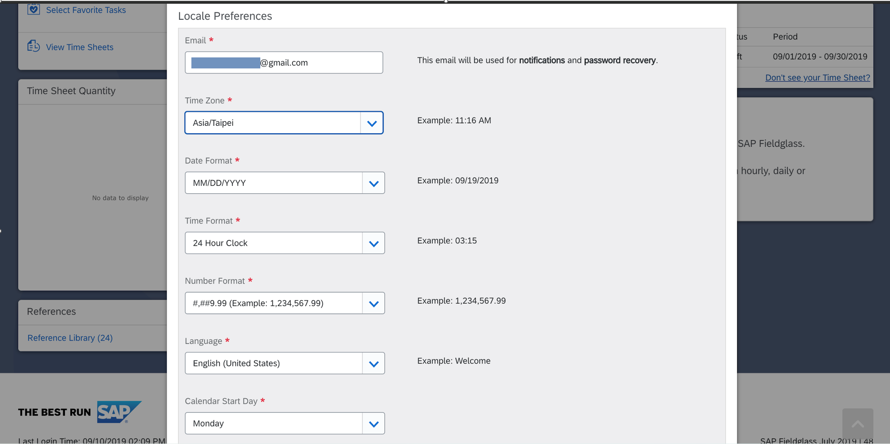
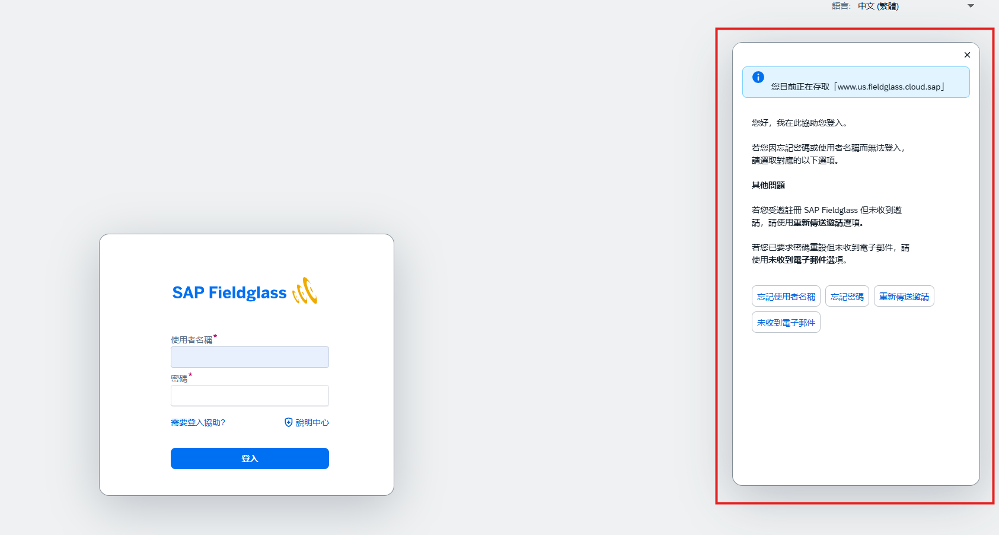

這個平台是做什麼的？
Fieldglass 使用用途
- 填寫出勤（Timesheet）
- 提交代墊費用（Expense Sheet）
首次登入
S1
尋找開通信件
- 至您註冊的私人信箱搜尋「Fieldglass」
- 找到 Fieldglass 寄出的帳號開通信件
- 開啟信件後，確認以下資訊：
- 開通連結（Activation Link）
- Username
找不到信件？請確認垃圾郵件或其他分類信件匣。
若開通時間已超過 24 小時，可至 Fieldglass 頁面重新設定開通。
若開通時間已超過 24 小時，可至 Fieldglass 頁面重新設定開通。
S2
啟用帳號並設定密碼
- 點擊信件中的開通連結
- 依照畫面指示設定您的登入密碼
- 完成後，即代表 Fieldglass 帳號已啟用
- 請使用 Username 及新設定的密碼登入 Fieldglass
S3
確認時區設定
首次登入後，請立即確認時區設定。若時區設定錯誤，可能導致出勤時間顯示錯誤。
Time Zone 請設定為
Asia/Taipei
操作路徑：Settings → Time Zone → Asia/Taipei
點擊圖片可放大

⚠️ 重要提醒：請確認時區為 Asia/Taipei，再開始填寫 Timesheet。
忘記密碼怎麼辦？
方1
使用「需要登入協助？」
- 進入 Fieldglass 登入頁面
- 點擊「需要登入協助？」
- 右側彈窗出現後，選擇以下其中一項：
- 忘記密碼 → 輸入 Username
- 重新傳送邀請 → 輸入私人信箱
- 至信箱收取重設信件，依指示完成密碼重設
點擊圖片可放大

方2
聯繫藝珂顧問
若以上方式皆無法解決，請聯繫您的藝珂顧問協助處理。
常見登入問題
請至私人信箱搜尋「Fieldglass」，並一併確認垃圾郵件匣。
請至 Fieldglass 登入頁，點擊「需要登入協助？」，選擇「忘記密碼」或「重新傳送邀請」。
月底系統可能較為繁忙，請稍後再嘗試登入。若問題持續，請聯繫藝珂顧問。